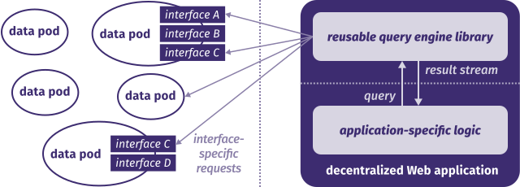

Re-decentralizing the Web
3 paradigm shifts and a way to get there
Ruben Verborgh
Ghent University – imec
On a decentralized Web,
people have a free choice
of where to store their data
and which apps can access it.
Paradigm shift 1
People become data owners
Different platforms tackle decentralization
at very different scales.

Every piece of data in decentralized apps
can come from a different place.

Paradigm shift 2
Apps become views
Multiple decentralized Web apps
share access to your personal data pod.

Different app and storage providers
compete independently.

Paradigm shift 3
Interfaces become queries
Hard-coded client–server contracts are
unsustainable with multiple sources.

Query-based contracts can make
decentralized Web apps more sustainable.

Is there a role for blockchain
on a decentralized Web?
Current apps do centralized computations
on centralized hardware clusters.

Blockchain can provide incentives and
trust for decentralized computations.

By separating data from apps,
decentralization changes development.
- People become data owners.
- Apps become views.
- Interfaces become queries.
- Blockchain lets nodes collaborate on query execution.